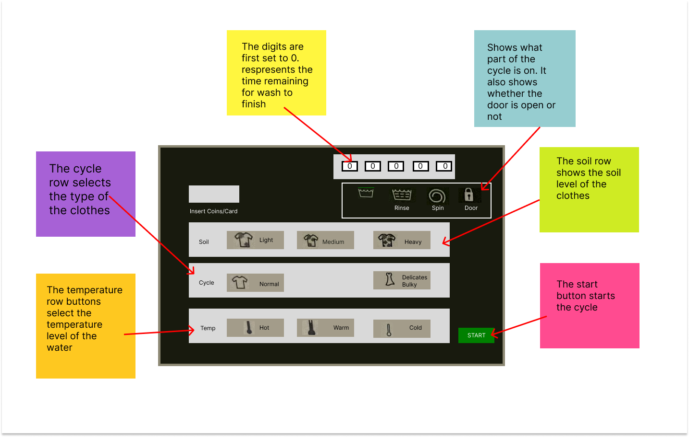

For the persona and storyboarding project, our task is to observe real
users interacting with an interface, interview these individuals about their experiences, create personas
based
on these users, and illustrate a storyboard for one of our personas.
PART ONE: PREPARATION
Description About The Interface

I chose a washing machine that is located in the basement of Harkness as my interface. It is in the public
view and accessible to everyone. The interface is used to wash any type of clothes using soap and water. Its
main components include:
Detergent drawer, which contains the detergent, softener, and bleach
The door, which is where the clothes are placed
Control panel settings, which is used to set the settings for the wash.
Here Is Sketch Of The Control Panel:
PART TWO: RECORDING OBSERVATIONS
OBSERVATION SUMMARY:
user1
First, checked the drum of the washing for leftover articles of clothing
Put the clothes in first
threw a couple of pod detergent into the drum.
And went to the laundry kiosk to set the settings for their load.
Came back to the washing machine.
chose the options for their cycle
and finally pressed start
user2
Opened the door,and put their blanket and all their sweaters inside
Opened another washing machine and put the rest of their clothes inside
Went to the laundry kiosk to pay and adjust the settings for the wash
Came back to the washing machine, opened the detergent drawer and put
detergent in the
detergent
compartment.
Then pressed start.
user3
put her laundry on the floor because it is very heavy
threw her laundry into the washer that has the least odor
she made sure that all her clothes are inside the drum before closing the
door
went to the laundry kiosk, selected the machine she is using and then swiped
her card
she went back and made sure she has the right settings
QUESTIONS
How often do you use this interface?
What time of the day do you usually do laundry?
What feature do you like the most?
What cycle do you usually use?
Do you use the same cycle each time?
How do you feel about the control panel settings?
What, if anything, would you change about the washing machine?
What challenges did you face, if any, while using the interface?
How do you know when your wash is done?
What do you do while you wait for your laundry to finish?
Anything else, you would like to share about your experience with the washing
machine?
SUMMARY OF THE USER'S RESPONSES:
Two of the users mentioned that the control panel is their favorite feature of the
interface. They
both
described it as “self-explanatory”. One user mentioned that it is easy to understand the
functionality
of the buttons, because they all have labels and visuals.
Most of the users choose the normal cycle setting for their wash
All of the users use a timer to know when their wash is done
Two of the users mentioned that they usually relax or do homework while waiting for
their
laundry to
finish.
There is a general consensus that the detergent drawer is confusing.
PART THREE: PERSONAS
Clean Clara is dedicated white-belt Taekwondo student who washes her uniform before every
practice,
which happens four times a week. She only has one uniform and doesn't like going to practice
wearing
smelly clothes.This persona represents users who do laundry frequently because they like being
clean
ALL THE TIME.
Old owen is 86 years old man who has lives with his wife in an apartment in Boston. Because he is
not
in a nursery house and doesn't have maids working for him, he has no choice but to do his own
laundry. Owen has back problems and doesn't enjoy bending down to put his clothes in the washer.
This personas represents users with back problems who might find it hard to do laundry using
this
interface, because it requires bendig down to place the clothes in the dryer.
PART FOUR: STORYBOARD
The following storyboard is based off the persona of Clean Clara